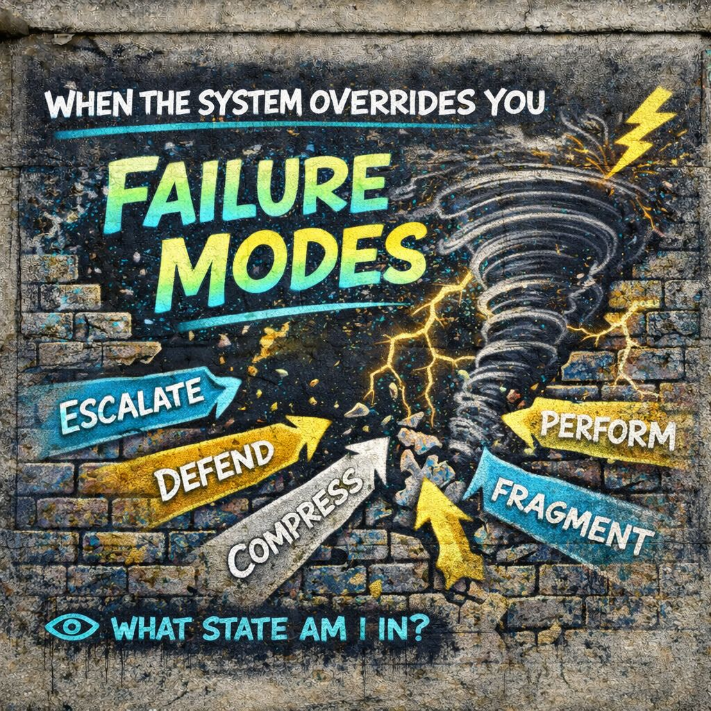

🌪 Failure Modes
You got carried.”
⚡ Too fast
🧩 Too certain
🎭 Too automatic
🧱 Too rigid
🌪 System takes over
👁️ Catch the state…
and you get yourself back.
📍 Foundation
Up to now, the system builds cleanly:
That is normal operation.
But under pressure, the system does not just build identity.
It can overrun it.
⚙️ Core Definition (IPT)
Not “bad people.”
Not “weak minds.”
🧠 What Changes In Failure Mode
Normally
- you observe
- you interpret
- you choose
In Failure
- ⚡ velocity spikes
- 🧩 meaning locks instantly
- 🎭 role engages automatically
- 🧱 identity defends itself
No pause.
No flexibility.
🔥 Primary Failure States
🌪 1. Escalation
“I’m getting pulled faster than I can think.”
- rapid emotional rise
- argument intensifies
- reaction chains accelerate
- everything feels urgent
⚡ velocity dominates
🛡 2. Defensive Lock
“This must be protected.”
- identity feels threatened
- interpretation becomes rigid
- opposing signals get rejected
- justification loops begin
🧱 identity hardens
🧊 3. Compression
“Hold it in. Don’t react.”
- internal pressure builds
- no outward expression
- overload stored, not released
- tension accumulates
🧠 system contains instead of processes
🕳 4. Collapse
“I don’t know what’s happening anymore.”
- identity destabilizes
- meaning fragments
- confusion spikes
- withdrawal or shutdown
🧩 structure breaks down
🎭 5. Performance Loop
“Just play the role.”
- automatic persona activation
- optimized for audience
- detached from internal signal
- sustained output without grounding
🎭 role replaces self
🧬 6. Fragmentation
“Different versions of me in different places.”
- identity shifts across contexts
- no stable center
- inconsistent behavior
- self feels split or scattered
🧱 stability breaks into pieces
🌐 What Causes Failure Modes
Failure is not random.
It is usually triggered by combinations of:
- 📡 high signal density, too much input
- ⚡ high velocity, too fast to process
- 🌐 strong generalized other, social pressure
- 🎭 heavy role demand, must perform
- 🧱 rigid identity, cannot flex
the system tips.
📱 Modern Amplifier
Today’s environment is basically a failure-mode generator:
- constant input
- algorithmic escalation
- identity-based content
- public visibility pressure
- rapid feedback loops
What used to be occasional is now frequent.
🔁 Failure Loop
Here is the dangerous cycle:
🧱 Defensive identity
⚔️ Conflict
⚡ More velocity
🧩 Harder meaning lock
Loop repeats.
Each cycle reinforces the last.
👁️ IPT Intervention Point
IPT does not try to “win” inside failure mode.
It tries to notice it early.
That question alone can:
- reduce velocity
- soften identity lock
- reopen interpretation
- restore choice
🧠 Micro-Signs You’re In It
- urgency feels extreme
- certainty spikes fast
- opposing views feel intolerable
- body tension rises
- reaction feels automatic
- you feel “in it,” not observing it
That’s capture.
🔓 Exit Strategy: IPT Style
Not suppression.
Not denial.
Then:
- slow velocity
- delay response
- re-open meaning
- step out of role
- loosen identity grip
You step out of its speed.
⚖️ Important Distinction
Failure modes are not flaws.
They are:
The same system that:
- helps you survive
- helps you belong
- helps you respond
can overload under pressure.
🔥 IPT Edge
Mead Shows
how the self forms socially
IPT Shows
how the self can be hijacked by speed, pressure, and repetition
👁️ Final Distillation
when the system runs faster than awareness can track.
You got carried.
⚡ Too fast
🧩 Too certain
🎭 Too automatic
🧱 Too rigid
🌪 System takes over
👁️ Catch the state…
and you get yourself back.